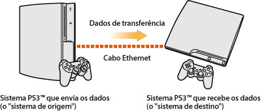
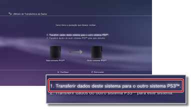
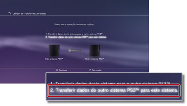

Definições > Definições de Sistema > Utilitário de Transferência de Dados
Utilitário de Transferência de Dados
Pode agora transferir (copiar ou mover) dados guardados no armazenamento do sistema PS3™ para o armazenamento de outro sistema PS3™ utilizando um cabo Ethernet.

Atenção
- Quando executa esta operação, todos os dados guardados no sistema PS3™ que irão receber os dados (o "sistema de destino") serão eliminados.
- Os dados eliminados não podem ser restaurados, pelo que deve certificar-se de que não elimina acidentalmente dados importantes. A perda ou alteração de dados é da responsabilidade do utilizador.
- Alguns tipos de dados poderão não ser transferíveis. Seleccione aqui para obter mais detalhes.
Preparação dos sistemas para a transferência de dados
Antes de iniciar a operação de transferência de dados, deve executar os seguintes passos.
1. |
Actualize o software de sistema de ambos os sistemas PS3™ para a versão mais recente. |
|---|---|
2. |
Prepare o sistema PS3™ que vai enviar os dados (o "sistema de origem"). |
- Crie uma conta Sony Entertainment Network se um utilizador não tiver uma conta.
- - Seleccione
 (PlayStation™Network) >
(PlayStation™Network) >  (Inscrever-se) e, em seguida, siga as instruções no ecrã para criar uma conta.
(Inscrever-se) e, em seguida, siga as instruções no ecrã para criar uma conta. - Desactive o sistema PS3™ se os dados a serem transferidos contêm conteúdo que foi adquirido da PlayStation®Store.
- - Seleccione (PlayStation™Network) >
 (Gestão de Contas) >
(Gestão de Contas) >  (Activação do sistema).
(Activação do sistema). - Faça uma cópia de segurança ou "sincronize" as informações de troféus no sistema PS3™ com o servidor PSNSM se pretende transferir informações de troféus.
- - Inicie a sessão na PSNSM e seleccione (PlayStation™Network) >
 (Colecção de Troféus).
(Colecção de Troféus). - Faça uma cópia de segurança das suas informações de perfil e das etapas criadas em LittleBigPlanet™ para o seu jogo guardado. Pode depois utilizar os dados guardados quando jogar LittleBigPlanet™ no sistema PS3™ de destino.
Atenção
As seguintes restrições aplicam-se se executar a operação de transferência de dados sem criar uma conta:
- Poderá não conseguir utilizar os dados guardados no sistema PS3™ de destino.
- Poderá já não conseguir ganhar troféus utilizando os dados guardados que transferiu.
- As informações de troféus não são transferidas.
Transferência de dados
Desligue ambos os sistemas PS3™ e execute os seguintes passos. Se os dados transferidos forem dados de jogos guardados com protecção contra cópia ou dados com protecção de direitos de autor, serão movidos para o sistema PS3™ de destino e eliminados do sistema PS3™ de origem.
1. |
Utilizando um cabo Ethernet, ligue directamente os dois sistemas PS3™. |
|---|---|
2. |
Ligue os sistemas PS3™ aos diferentes conectores de entrada de vídeo na TV. |
3. |
Ligue a TV e, em seguida, ligue os sistemas PS3™. |
4. |
No sistema PS3™ de origem, seleccione |
5. |
Seleccione [1. Transferir dados deste sistema para o outro sistema PS3™.].  Se não concluiu os passos de preparação descritos anteriormente, siga as instruções no ecrã para concluir estes passos. |
6. |
Quando o sistema PS3™ está em modo de espera para iniciar a transferência de dados, utilize o comando à distância da TV para mudar a entrada de vídeo para apresentar o ecrã do sistema PS3™ de destino. |
7. |
No sistema PS3™ de destino, seleccione |
8. |
Seleccione [2. Transferir dados do outro sistema PS3™ para este sistema.]  Siga as instruções no ecrã para concluir a operação. |
 (Definições) >
(Definições) >  (Definições de Sistema) > [Utilitário de Transferência de Dados].
(Definições de Sistema) > [Utilitário de Transferência de Dados].Notas
- Depois de concluída a operação de transferência de dados, pode desligar o sistema PS3™ de origem. Configure a TV para apresentar o ecrã do sistema PS3™ de origem e seleccione
 (Utilizadores) >
(Utilizadores) >  (Desligue).
(Desligue). - Se o conteúdo transferido da PlayStation®Store foi transferido como parte desta operação, deve activar o sistema PS3™ de destino antes de poder utilizar os dados. Inicie a sessão no sistema PS3™ como o utilizador proprietário do conteúdo e seleccione (PlayStation™Network) > (Gestão de Contas) > (Activação do sistema) para activar o sistema.
Limitações do utilitário de transferência de dados
Alguns tipos de dados não poderão ser transferidos utilizando o utilitário de transferência de dados e alguns tipos de dados poderão ser transferidos mas não reproduzidos no sistema PS3™ de destino.
Para obter informações mais recentes, visite o Web site da SIE da sua região. Os seguintes tipos de dados não são transferíveis:
- As faixas (incluindo "pacotes de música") do software SingStar™ guardadas no armazenamento do sistema PS3™
- Ficheiros de vídeo protegidos por direitos de autor (tipos de ficheiros: MGV e ETS)
- Ficheiros de vídeo compatíveis com o serviço VOD (Video On Demand) DivX®
- Os seguinte títulos do formato de software PlayStation®2, se instalados no armazenamento do sistema PS3™:
Nos seguintes tipos de dados, deve efectuar alguns passos adicionais após concluir a transferência de dados para poder utilizar os dados:
- GripShift™
- - Quando iniciar o jogo pela primeira vez após a operação de transferência, será apresentada uma mensagem de erro e não poderá jogar o jogo. Para jogar o jogo, transfira e instale de novo o jogo.
- Dados guardados para Ghostbusters™ e Ghostbusters™: The Video Game
- - O jogo guardado não será reconhecido quando iniciar o jogo pela primeira vez após a operação de transferência. Para utilizar os dados guardados, saia do jogo e, em seguida, inicie de novo o jogo.
Nota
Alguns títulos de software podem não ser vendidos em algumas regiões.